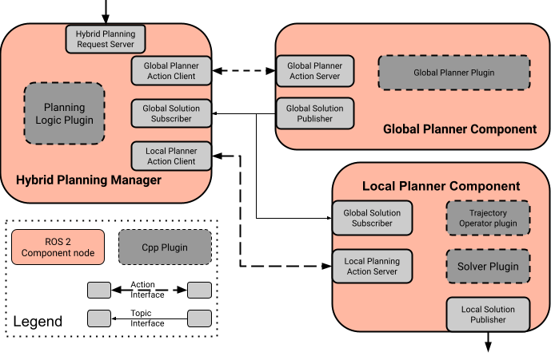
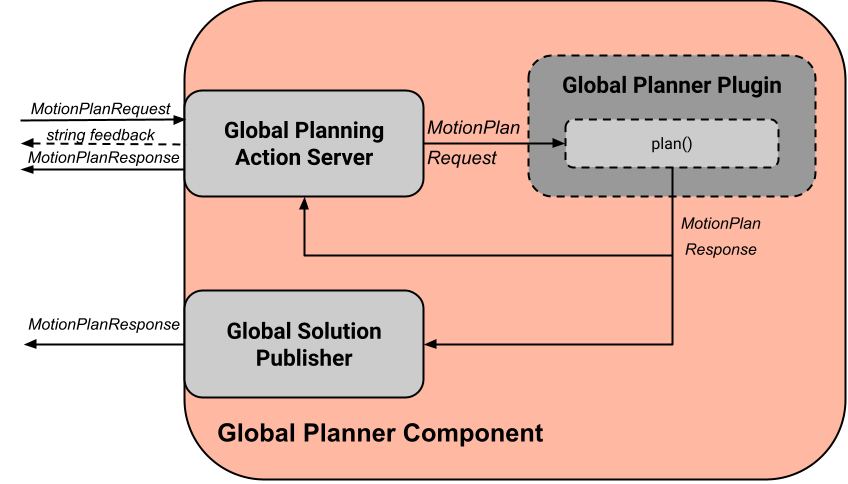
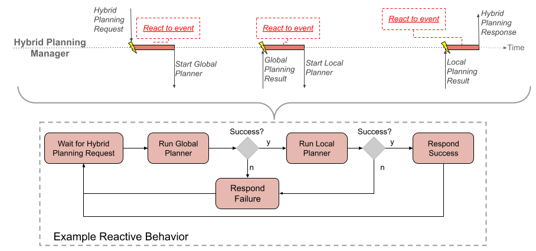

Hybrid Planning
In this section, you will learn how to use Moveit 2’s Hybrid Planning feature.
Hybrid Planning enables you to (re)plan and execute robot motions online with MoveIt 2 and to add more planning logic into your robot’s motion planning pipeline.

What is Hybrid Planning?
Hybrid Planning uses a (slower) global motion planner in combination with a (faster) local motion planner to enable a robot to solve different tasks online and in dynamic environments. Typically, the global motion planner is used to create an initial motion plan offline and to re-plan it if the global solution gets invalidated. The local planner adapts the global solution to local constraints and reacts immediately to changes in the environment. A more detailed description of the architecture can be found in the Hybrid Planning Concepts Page.
The architecture that enables Hybrid Planning in MoveIt 2 can be seen below:
{kind=link}
The Hybrid Planning Manager provides an API for Hybrid Planning requests, implements the high-level planning logic and coordinates both planners and their interaction. Global planning requests are responded by the Global Planner Component which solves a given planning problem and publishes the solution. The Local Planner Component processes incoming global trajectory updates and solves the local planning problem at each iteration. The main advantages of using the architecture are:
Global and local constrained motion planning problems can be handled separately
Online motion planning is possible with the local planner
Reactive re-planning in dynamic or unknown environments
Getting Started
If you haven’t already done so, make sure you’ve completed the steps in Getting Started.
To start the hybrid planning demo simply run:
ros2 launch moveit_hybrid_planning hybrid_planning_demo.launch.py
You should see a similar behavior as in the example GIF above without the replanning.
To interact with the architecture you simply need to send a Hybrid Planning Request to an action server offered by the Hybrid Planning Manager as seen in the hybrid_planning_test_node.
Let’s change this behavior such that the architecture replans the invalidated trajectory. To do so, just change the planner_logic_plugin by replacing the plugin name in the demo configuration with “moveit_hybrid_planning/ReplanInvalidatedTrajectory” and rebuild the package :
colcon build --packages-select moveit2_tutorials
After re-running the launch command from above, you should see that the architecture replans the invalidated trajectory.
To include the Hybrid Planning Architecture into you project you need to add a Hybrid Planning component node with the necessary parameters into one of your launch files:
# Generate launch description with multiple components
container = ComposableNodeContainer(
name="hybrid_planning_container",
namespace="/",
package="rclcpp_components",
executable="component_container",
composable_node_descriptions=[
ComposableNode(
package="moveit_hybrid_planning",
plugin="moveit::hybrid_planning::GlobalPlannerComponent",
name="global_planner",
parameters=[
global_planner_param,
robot_description,
robot_description_semantic,
kinematics_yaml,
ompl_planning_pipeline_config,
],
),
ComposableNode(
package="moveit_hybrid_planning",
plugin="moveit::hybrid_planning::LocalPlannerComponent",
name="local_planner",
parameters=[
local_planner_param,
robot_description,
robot_description_semantic,
kinematics_yaml,
],
),
ComposableNode(
package="moveit_hybrid_planning",
plugin="moveit::hybrid_planning::HybridPlanningManager",
name="hybrid_planning_manager",
parameters=[hybrid_planning_manager_param],
),
],
output="screen",
)
Customizing the Hybrid Planning Architecture
As the rest of Moveit 2, the Hybrid Planning Architecture is designed to be highly customizable while also offering the possibility to easily re-use existing solutions. Each of the architecture’s components is a ROS 2 node and can be completely replaced by your own custom ROS 2 node as long as it offers the API required by the other nodes. Each component’s runtime behavior is defined by plugins. This section focuses on the customization of the Hybrid Planning Architecture by implementing your own plugins.
Global and Local Motion Planning
To get a global motion planning solution, the Global Planner Component needs to be activated via the Global Planning Action Server. When it receives a MotionPlanRequest the component computes a motion plan with the Global Planner Plugin and publishes the solution to the other components. The dataflow within the component can be seen in the picture below:
{kind=link}
The Global Planner Plugin can be used to implement and customize the global planning algorithm. To implement you own planner you simply need to inherit from the GlobalPlannerInterface:
class MySmartPlanner : public GlobalPlannerInterface
{
public:
// Constructor and Destructor - Don't forget to define it!
MySmartPlanner() = default;
~MySmartPlanner() = default;
// This function is called when your plugin is loaded
bool initialize(const rclcpp::Node::SharedPtr& node) override;
// Defines how the planner solves the motion planning problem
moveit_msgs::msg::MotionPlanResponse
plan(const std::shared_ptr<rclcpp_action::ServerGoalHandle<moveit_msgs::action::GlobalPlanner>> global_goal_handle) override;
// This is called when global planning is aborted or finished
bool reset() override;
};
Global Planner example implementations can be found here.
More complex is the behavior of the Local Planner Component. The data flow is displayed below:

The local planner is started and stopped via the Local Planning Action Server. After the component is started it performs each iteration the following tasks:
Fetch the local planning problem based on the current state by calling getLocalTrajectory()
Solve the local planning problem defined by the desired local trajectory and optional additional constraints as defined by the Local Solver Plugin
Publish the local solution as JointTrajectory or Float64MultiArray message
Via the Global Solution Subscriber the Local Planner Component receives global planning updates which are processed and blended into the reference trajectory. Based on this reference trajectory the local planner identifies and solves local planning problems once it is started. How the global trajectory updates are processed and included into the reference trajectory is defined by the Trajectory Operator ‘s addTrajectorySegment() function.
The behavior of the Local Planner Component can be customized via the Trajectory Operator Plugin and the local Solver Plugin:
The Trajectory Operator Plugin handles the reference trajectory. To create your own operator you need to create a plugin class which inherits from the TrajectoryOperatorInterface:
class MyAwesomeOperator : public TrajectoryOperatorInterface
{
public:
// Constructor and Destructor - Don't forget to define it!
MyAwesomeOperator() = default;
~MyAwesomeOperator() = default;
// This function is called when your plugin is loaded
bool initialize(const rclcpp::Node::SharedPtr& node, const moveit::core::RobotModelConstPtr& robot_model,
const std::string& group_name) override;
moveit_msgs::action::LocalPlanner::Feedback
// Process global trajectory updates
moveit_msgs::action::LocalPlanner::Feedback
addTrajectorySegment(const robot_trajectory::RobotTrajectory& new_trajectory) override;
// Sample the local planning problem from the reference trajectory
moveit_msgs::action::LocalPlanner::Feedback
getLocalTrajectory(const moveit::core::RobotState& current_state,
robot_trajectory::RobotTrajectory& local_trajectory) override;
// Optional but can be useful for the algorithm you're using
double getTrajectoryProgress(const moveit::core::RobotState& current_state) override;
// This is called when local planning is aborted or re-invoked
bool reset() override;
};
Trajectory Operator example implementations can be found here.
The Local Solver Plugin implements the algorithm to solve the local planning problem each iteration. To implement your solution you need to inherit from the LocalConstraintSolverInterface:
class MyAwesomeSolver : public LocalConstraintSolverInterface
{
public:
// Constructor and Destructor - Don't forget to define it!
MyAwesomeSolver() = default;
~MyAwesomeSolver() = default;
// This function is called when your plugin is loaded
bool initialize(const rclcpp::Node::SharedPtr& node,
const planning_scene_monitor::PlanningSceneMonitorPtr& planning_scene_monitor,
const std::string& group_name) override;
// This is called when the local planning is aborted or re-invoked
bool reset() override;
// Within this function the local planning problem is solved.
// Conversation into the configured msg type is handled by the local planner component
moveit_msgs::action::LocalPlanner::Feedback
solve(const robot_trajectory::RobotTrajectory& local_trajectory,
const std::shared_ptr<const moveit_msgs::action::LocalPlanner::Goal> local_goal,
trajectory_msgs::msg::JointTrajectory& local_solution) override;
};
Local Constraint Solver example implementations can be found here.
Both plugins receive a shared pointer to the ROS 2 node when they get initialized which can be used to create additional custom ROS 2 communication interfaces for example to subscribe to an additional sensor source.
Planning Logic and Reactive Behavior
Besides the possibility to combine global and local motion planner, this architecture enables the robot to react online to events. You can customize this behavior with the Planning Logic Plugin. A simple example for a Hybrid Planner Logic can be seen in the next figure:
{kind=link}
Events are discrete signals that trigger a callback function within the Hybrid Planning Manager. ROS 2 action feedback, action results and topics are used as event channels. Important to mention is, that the action feedback from the planner nodes to the Hybrid Planning Manager is not used to return feedback but to trigger reactions to events that occur while an action is active. An example would be an unforeseen collision object during the online local planning: The Local Planner Component sends a “collision object ahead” event message via the action feedback channel to the Hybrid Planning Manager but whether the current local planning action is aborted or just the reference trajectory updated is decided by the Planner Logic Plugin in the Hybrid Planning Manager.
The callback function an event channel in the Hybrid Planning Manager looks like this:
// Local planner action feedback callback
local_goal_options.feedback_callback =
[this](rclcpp_action::ClientGoalHandle<moveit_msgs::action::LocalPlanner>::SharedPtr /*unused*/,
const std::shared_ptr<const moveit_msgs::action::LocalPlanner::Feedback> local_planner_feedback) {
// Call the planner plugin's react function with a given event string
ReactionResult reaction_result = planner_logic_instance_->react(local_planner_feedback->feedback);
// If the reaction is not successful, the whole hybrid planning action is aborted
if (reaction_result.error_code.val != moveit_msgs::msg::MoveItErrorCodes::SUCCESS)
{
auto result = std::make_shared<moveit_msgs::action::HybridPlanning::Result>();
result->error_code.val = reaction_result.error_code.val;
result->error_message = reaction_result.error_message;
hybrid_planning_goal_handle_->abort(result);
RCLCPP_ERROR(LOGGER, "Hybrid Planning Manager failed to react to '%s'", reaction_result.event.c_str());
}
};
To create you own Planner Logic Plugin you need inherit from the PlannerLogicInterface:
class MyCunningLogic : public PlannerLogicInterface
{
public:
// Brief constructor and destructor
MyCunningLogic() = default;
~MyCunningLogic() = default;
// The plugin needs a shared pointer to the hybrid planning manager to access its member functions like planGlobalTrajectory()
bool initialize(const std::shared_ptr<moveit_hybrid_planning::HybridPlanningManager>& hybrid_planning_manager) override;
// This function can be used to implement reaction to some default Hybrid Planning events
ReactionResult react(const BasicHybridPlanningEvent& event) override;
// Here are reactions to custom events encoded as string implemented
ReactionResult react(const std::string& event) override;
};
A possible implementation of the react() function could contain a switch-case statement that maps events to actions like in the example logic plugins.